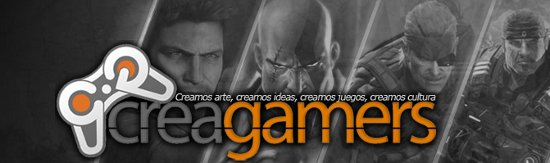

Feb 8, 2011 · 1 minute read · Comments
Games development

Se ha publicado un artículo sobre IberOgre en Creagamers, una comunidad de desarrollo de videojuegos española. Tras contactar con el administrador hemos llegado a un acuerdo de colaboración de forma que contaremos con el respaldo de Creagamers más allá de este artículo inicial. Esto significa muchísimo para IberOgre ya que como cualquier wiki que se precie necesita de un grupo de usuarios que la siga, mejore y amplíe.
Uno de mis próximos objetivos para IberOgre era mejorar su difusión y parece que vamos viento en popa. No obstante aún estamos lejos de contar con una base de usuarios estable, todo se andará.
¡Muchas gracias Creagamers!
Feb 8, 2011 · 4 minute read · Comments
Games development
Entregas:
Mientras diseñaba e implementaba el sistema de detección de colisiones de Sion Tower (STC) he leído bastante y aprendido mucho al respecto. Es un tema muy complejo, crítico y delicado estudiado con detalle en varias ocasiones. Me queda muchísimo por aprender al respecto pero por razones de calendario no puedo permitirme abarcarlo todo antes de ponerme a trabajar. Este es el primero de una serie de artículos en los que documento el sistema de colisiones que he desarrollado. Comenzamos con los requisitos del sistema y las alternativas disponibles.
Requisitos del sistema
En el documento de diseño de Sion Tower se especifican los posibles tipos de colisiones que pueden darse en el transcurso de una partida típica (sección 3.4.1):
- Personaje-Personaje
- Personaje-Escenario
- Hechizo-Personaje
- Hechizo-Escenario
- Trampa-Personaje
- Trampa-Escenario
El área de colisión del protagonista y los enemigos podrían modelarse utilizando una o varias cajas. El escenario estará compuesto por el suelo y diversas piezas de mobiliario, es decir, un plano y otro puñado de cajas. Las trampas también pueden modelarse como cajas mientras que el área de efecto de un proyectil mágico podría ser representado mediante una sencilla esfera. Parte de la mecánica de juego consiste en seleccionar un hechizo o trampa utilizando los botones de la interfaz y colocarlo en el escenario con el ratón. Para ello hay que transformar coordenadas de pantalla (donde se desplaza el ratón) a un rayo que atraviesa el escenario y detectar las intersecciones con elementos del juego (técnica conocida como mouse raycasting).
Antes de lanzarme a la piscina redacté una pequeña lista de las funcionalidades que debía ofrecer el sistema de colisiones que utilizase Sion Tower. Básicamente se reducían a las siguientes:
- Soporte para varias formas: esferas, planos, AABB y OBB
- Tests de colisión para las combinaciones de dichas formas. El usuario de la API le pasa varias formas de un tipo genérico al sistema y éste selecciona el test adecuado (collision dispatching).
- Elementos de juego compuestos de una o varias formas básicas.
- Gestor de colisiones que controle los elementos del juego y pueda detectar solapamientos entre ellos.
- Rendimiento, debe incorporar técnicas de particionado del espacio para ahorrar recursos.
- Filtrado de colisiones, el usuario debe poder definir clases de elementos de juego que pueden colisionar.
- Registro de callbacks para tipos de colisiones concretas. Por ejemplo, debe ser posible definir una función que será llamada automáticamente por el gestor de colisiones cuando un enemigo reciba el impacto de un hechizo.
Alternativas disponibles
Reinventar la rueda siempre es una mala idea así que lo primero que hice fue salir en busca de un sistema que se ajustase a mis necesidades. A continuación listo las alternativas disponibles junto con el motivo que me llevó a desecharlas.
- Ogre Bullet: wrapper de la mastodóntica biblioteca de físicas Bullet para Ogre3D. Es multiplataforma (disponible en decenas de sistemas) y ofrece todas las funcionalidades que uno podría desear con una eficiencia envidiable. No obstante, era como matar moscas a cañonazos. Para empezar sólo me interesaba el subsistema de detección de colisiones, no el de físicas. Además, añadía nuevas dependencias al proyecto y aprender a utilizarla no iba a ser trivial.
- Ogre ODE: el correspondiente wrapper de Open Dynamics Engine para Ogre3D. Básicamente presenta las mismas ventajas e inconvenientes que la anterior. El problema es que el proyecto no está muy activo hablando suavemente.
- MOC: Minimal Ogre Collision es una biblioteca tremendamente sencilla que proporciona al usuario lo mínimo para detectar colisiones. Se compone únicamente de dos ficheros sólo hay que añadir al proyecto. El problema es que obliga al uso del gestor de terrero ETM y no incluye callbacks.
- Beastie: sencilla biblioteca compuesta únicamente por un fichero de cabecera enfocada a la detección de colisiones entre formas básicas y raycasting (emisión de rayos sobre la escena). Su interfaz no me acababa de convencer y tampoco ofrece callbacks ni cuerpos compuestos de varias formas.
Es cierto que podría haber hecho el esfuerzo y adaptarme a cualquiera de las cuatro bibliotecas anteriores (sobre todo a Beastie) pero como Sion Tower forma parte de mi Proyecto Fin de Carrera decidí que era mejor aprender los fundamentos de la detección de colisiones. Por supuesto era imprescindible mantener al mínimo la complejidad con el objetivo de no hacerme viejo antes de terminarla.
Por el momento no ofrezco más que este pequeño aperitivo introductorio. En el próximo artículo de la serie veremos el diseño general de Sion Tower Collisions (STC). Más adelante nos centraremos en cada uno de los componentes de dicho sistema.
Feb 6, 2011 · 2 minute read · Comments
Games development

El siguiente objetivo en el desarrollo de Sion Tower era la implementación de un sistema de detección de colisiones. Hablamos de un apartado crítico en el desarrollo de un videojuego por la cantidad de cálculos que implica, hay que tener especial cuidado en ese sentido. Llevo un par de semanas trabajando en él de forma intensiva y al menos puedo decir que he conseguido algo que funciona. Les presento la versión 0.1 de STC: Sion Tower Collisions.
Modular y reutilizable
Al ser modular y completamente independiente del resto del juego he decidido liberarlo también por separado. Se puede utilizar sin ningún tipo de problemas en cualquier proyecto. Las únicas dependencias son Ogre y Boost. El código es C++ estándar así que es compatible con cualquier plataforma que soporte las dos bibliotecas anteriormente mencionadas.
Características
- Shape: formas de colisión básicas: esfera, plano y AABB.
- Collision Dispatching: elección del test de colisión de forma adecuado de forma transparente a partir de dos figuras génericas.
- Body: cuerpo colisionable compuesto de varias formas básicas.
- CollisionManager: gestor de colisiones que lleva el registro de de los cuerpos colisionables.
- Filtrado de colisiones: el usuario define explícitamente qué tipos de cuerpos pueden colisionar.
- Particionado del espacio: para aumentar el rendimiento se incorpora un filtrado inicial para evitar tests exhaustivos. Muy básico por el momento.
- Callbacks: es posible indicarle al gestor de colisiones que llame a una función miembro con una signatura determinada ante una colisión entre dos cuerpos de un tipo predefinido.
Descarga
He habilitado una descarga en la forja de Red Iris para que podáis acceder sin problemas. Incluye el código fuente, licencia (GPL 3) y documentación generada con Doxygen. Ruego que me enviéis algún mensaje en caso de encontrar cualquier tipo de problemas: bugs, uso, posibles mejoras, etc.
Documentación adicional
Estoy preparando una serie de varios artículos en los que desgranaré con todo lujo de detalles el proceso de diseño e implementación de este sistema de detección de colisiones. Unir toda la documentación en un sólo artículo lo haría demasiado extenso y prefiero ir poco a poco.
Feb 3, 2011 · 3 minute read · Comments
Computing

Cuando hace más de un año compré mi HTC Magic sólo había tres teléfonos Android en el mercado y todos del mismo fabricante. Alucinaba en colores con su conectividad, prestaciones y pantalla. ¡Tenía un teléfono más potente que mi primer ordenador! Como cualquier otro cacharro no tardó en quedarse anticuado y actualmente se resiente al trabajar casi con cualquier aplicación. Por ello he decidido renovarme y adquirir el HTC Desire HD, una auténtica bestia parda. Cuando pase cierto tiempo trasteando con ella dejaré caer un pequeño análisis personal, mientras tanto comento la forma de eliminar esas odiosas aplicaciones de Vodafone.
El caca-soft
El placer por desprecintar el teléfono nuevo de turno es un claro símbolo consumista pero nos encanta a los amantes de los cacharros. Estaba maravillado por la potencia del HTC Desire HD, era capaz de mantener decenas de aplicaciones abiertas sin inmutarse lo más mínimo. De pronto me dije: “Oh wait…!", había descubierto las aplicaciones pre-instaladas de Vodafone. Raudo y veloz me dispuse a desinstalarlas pero (¡horror!) están bloqueadas y no pueden ser eliminadas. Mi odio hacia las aplicaciones que mancillan un flamante dispositivo no conoce límites. En la intimidad las llamo caca-soft.
Eliminar aplicaciones pre-instaladas de Vodafone
Una busqueda en Google confirmó mis sospechas, es necesario tener permisos root para poder eliminar aplicaciones bloqueadas. El HTC Desire HD es un terminal relativamente nuevo y aún no existe ningún sistema del tipo “dale a un botón y ya eres root”. Hacía falta hacer un downgrade de la ROM y varias operaciones de seguridad cuestionable. Me negaba.
Con la inestimable ayuda del foro HTC Manía encontré la respuesta. Es posible eliminar las aplicaciones que instala nuestro operador de telefonía sin cambiar la ROM ni tener acceso root. El proceso implica una restauración de fábrica. Las aplicaciones y los contactos están sincronizados, por tanto no los perderás. No obstante, los accesos directos y la configuración volverán a su estado inicial. Para librarte de una vez por todas del caca-soft sigue los siguientes pasos:
- Apaga el teléfono y retira la tarjeta SIM.
- Entra en modo recovery, lo conseguirás pulsando el botón “bajar volumen” mientras enciendes el terminal.
- Selecciona la opción “factory reset”. Para desplazarte por el menú puedes emplear las teclas de volumen, cuando quieras elegir una opción presiona ligeramente el botón de encendido.
- El teléfono se reiniciará.
- Sigue el proceso de configuración inicial y sincronización con Google utilizando una red Wi-Fi.
- Apaga el teléfono e introduce la SIM.
- Cuando arranques de nuevo se te preguntará si deseas sincronizar el teléfono con la tarjeta. Cancela la operación para siempre y no se instalarán las aplicaciones del operador.
Es cierto que las aplicaciones de HTC Sense no pueden ser eliminadas a través de este proceso y requieren disponer de acceso root. Pero al menos ya sufrirás esas aplicaciones que te impone tu operador, carecen de utilidad y a veces consumen recursos en segundo plano.
Eso es todo, ahora vivirás mejor.
Feb 1, 2011 · 2 minute read · Comments
Games development

Muchos seguidores de IberOgre estabais esperando un artículo a modo de introducción para aprender a inicializar el motor. Un artículo de lo más básico era imprescindible y estaba planificado desde el principio. No obstante, debido a diversos motivos no me ha sido posible publicarlo hasta ahora. El retraso ha sido imperdonable pero al menos me queda la satisfacción de haber cumplido el objetivo más prioritario de la lista de objetivos que publiqué hace unos días.
El artículo “Inicialización y cierre de Ogre” sería el primero en el que el lector comienza a trabajar de primera mano con la biblioteca. Es un choque complicado ante la increíble variedad de aproximaciones posibles ante un mismo problema, de hecho cuando yo tuve que dar mis primeros pasos me sentí abrumado. Por ello y siempre teniendo la perspectiva del principiante, he tratado de explicar los conceptos de la forma más clara posible. El lector que avance con paciencia por el artículo y se detenga en los ejemplos no debería tener ningún problema en comprender la secuencia de inicialización de Ogre. Se explican la carga de plugins, los ficheros de configuración y el sistema de logging. Creo que ha quedado un artículo bastante completo, pero siempre podéis mejorarlo haciendo comentarios y sugerencias.
Para terminar quiero decir que estoy horrorizado porque hace unos días recibí un correo de la Universidad de Cádiz recordando la fecha para la fase local del concurso. Tendrá lugar del 21 al 25 de marzo lo que quiere decir que… ¡Quedan menos de dos meses! Esto me dará la motivación suficiente para ampliar IberOgre y conseguir al menos una demo técnica de Sion Tower. Vislumbro muchísimo desarrollo por delante, horas de depuración, trabajo de arte y algún que otro golpe contra la pared.
¡Suerte a todos mis compañeros concursantes de Cádiz!